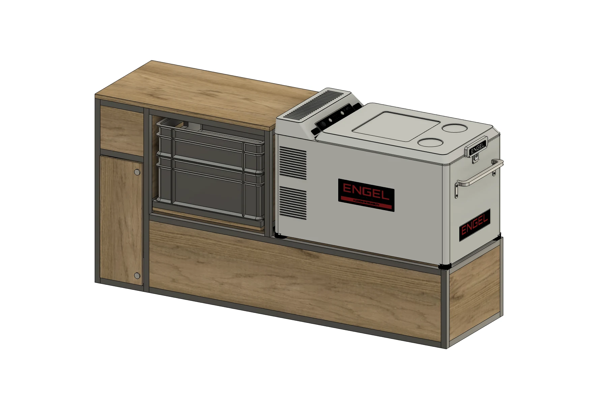
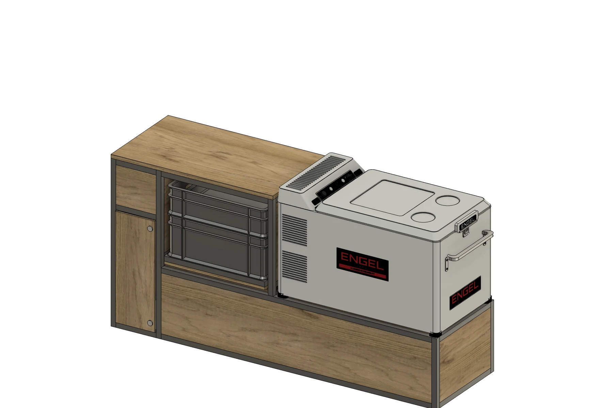
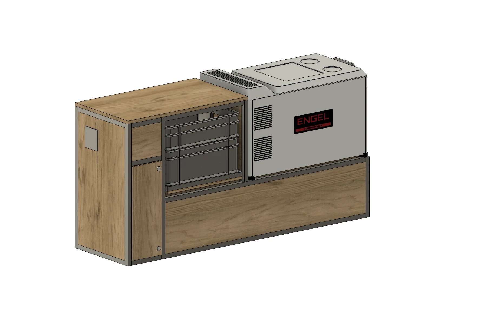
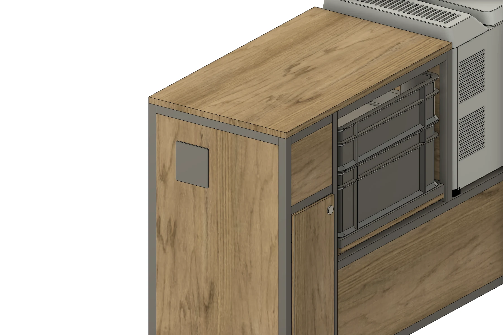
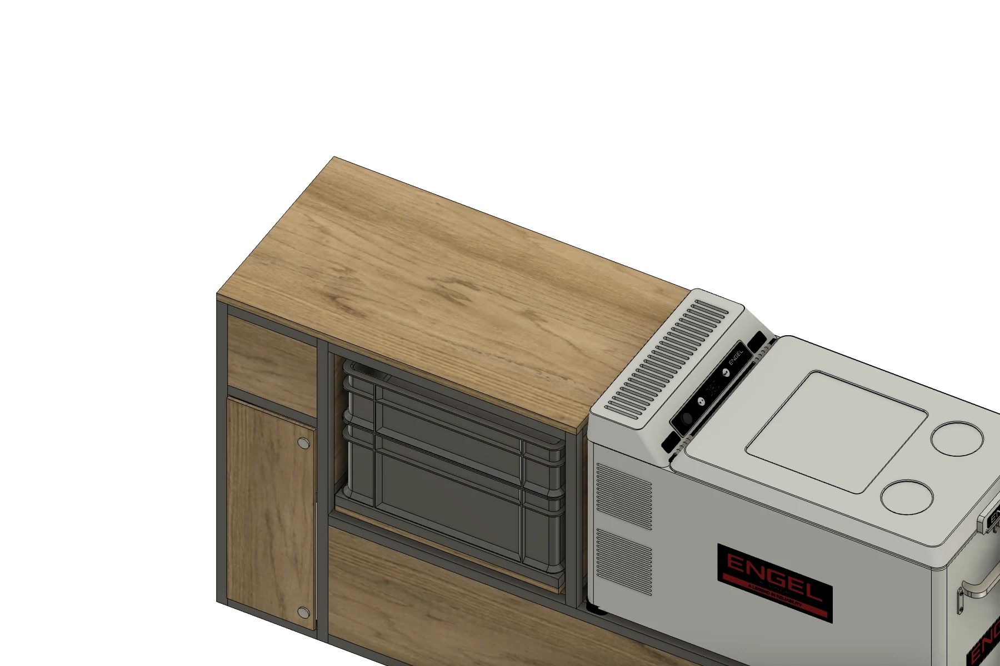

モジュール一覧 / 冷蔵庫付きサイドキャビネットMODULE 06 / 11
Side cabinet with fridge
ALUMINUM冷蔵庫付きサイドキャビネット
冷蔵庫をサイドへ。遊びの道具も、ひとまとめに。
フロントモジュールを設置せずに、冷蔵庫を備えられるサイドキャビネット。ENGELの上開き冷蔵庫を中心に、プッシュオープン式のユーロコンテナと後部のシャワーをひとつに。冷やす、しまう、水を使う。アクティブに過ごすための装備をサイドにまとめています。
Side cabinet with fridge

バーチ合板01
冷蔵庫をサイドに搭載フロントモジュールなしで、ENGEL冷蔵庫を設置
02
押して開くコンテナ収納上下2個のユーロコンテナをトレーごと引き出す
03
シャワーも使える後部の側面にシャワー部を配置
ENGEL REFRIGERATOR / TOP OPENING
フロントを空けて、冷蔵庫をサイドへ。
フロントモジュールを設置しないレイアウトでも、冷蔵庫を使えるモデル。右側の開き口からフタを持ち上げ、上から庫内にアクセスできます。閉じた状態と開いた状態を、同じ角度で紹介します。


EUROCONTAINER / PUSH OPEN
押す。引き出す。道具を取り出す。
ユーロコンテナはプッシュオープン式。まず前面を押してトレーを出し、そのまま手前へ引き出して使います。閉じたときは、天板の下へすっきり収まります。


SHOWER / ACTIVE USE
冷蔵庫と収納に、シャワーも。
後部のシャワーと、冷蔵庫の隣に続くALBERO合板の天板。冷たい飲み物や食材を保管し、道具をしまい、水も使う。アクティブな時間を支える装備をまとめています。


DETAILS
モジュールの内容
- 合板の仕上げ
- ヘキサ合板（ブラック）／バーチ合板
- 合板の小口
- どちらの仕様も木の色・木目
- 掲載冷蔵庫
- ENGEL MT35F-P・32L
- 冷蔵庫の開閉
- 上開き・正面から見て右側が開き口
- コンテナ収納
- 上下2個のユーロコンテナ・プッシュオープン式
- 水まわり
- 後部側面にシャワー
- フレーム・天板
- アルミフレーム／ALBERO合板の天板・厚さ15mm
- 本体の大きさ
- 長さ1,310 × 奥行374mm（突出部を除く）
- 高さ
- 天板上面650mm／冷蔵庫込み678mm